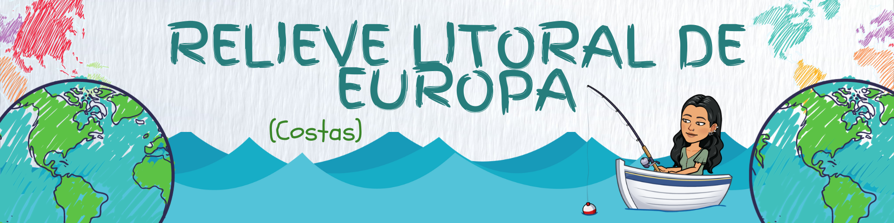
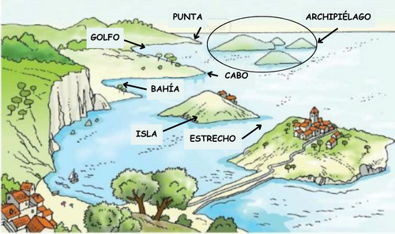
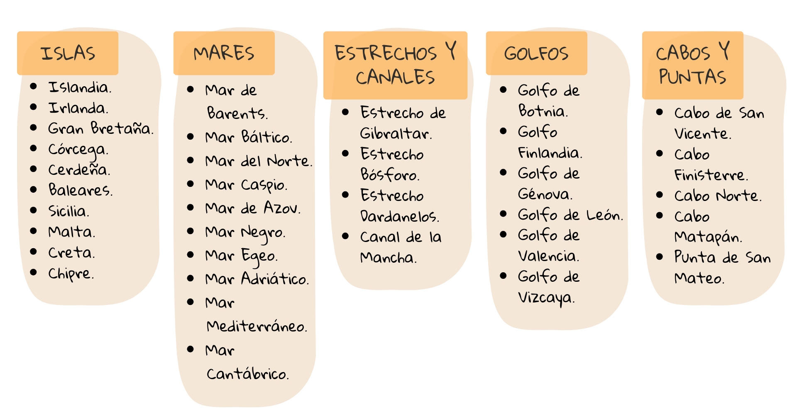

Los paisajes que están bañados por el mar son paisajes de costa. Tienen formas variables, en ocasiones se adentra el mar en la tierra y otras veces es la tierra la que se adentra en el mar. Todas estas formas la podemos clasificar en:
Isla. Son terrenos rodeados de mar por todas partes. Un grupo de islas cercanas forman un archipiélago.
Bahía y golfo. Una bahía es una entrada del mar en la tierra. Cuando es muy grande se le llama golfo.
Cabo. Cuando la tierra se adentra en el mar se le llama cabo o punta.
Estrecho. Paso angosto en el mar que comunica dos mares o dos océanos. A veces se le da el nombre de canal.

En EUROPA nos podemos encontrar con las siguientes:
